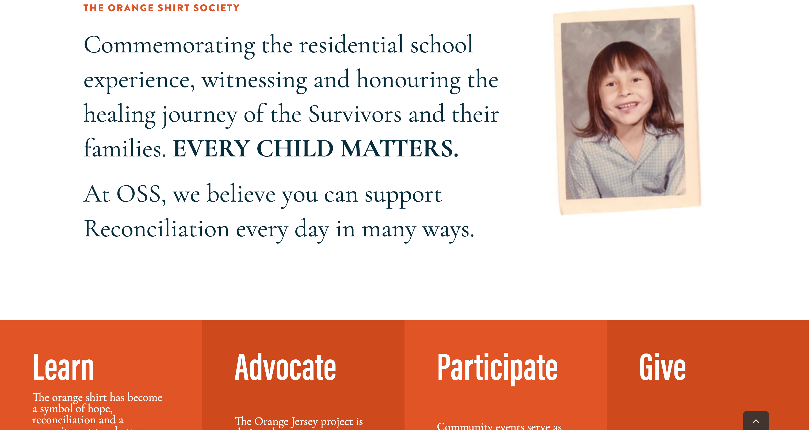
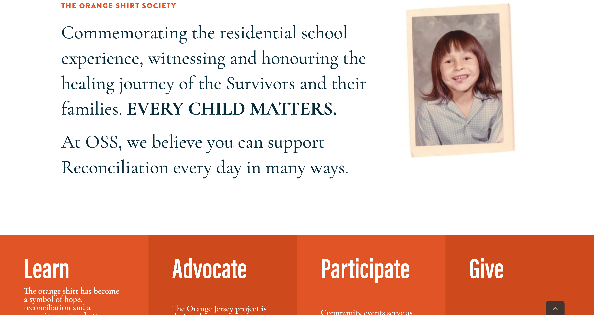

Ongoing Genocide in the Canadian Healthcare System:
Forced sterilization of First Nations and Inuit women in Canada
Style guide
Large/title text colour: #2E2E2E (Dark gray)
Regular text colour: #212121 (Darker gray)
Background colour: #ED752F (orange)
Additional colour: #e49767 (lighter orange)
Orange is associated with indigenous solidarity, primarily because of Orange Shirt Day, which honors the experiences of Indigenous children who experienced the Canadian residential school system. The colour orange comes from the storyPhyllis Webstadshared of her own experience, in which at six years old, she was stripped of her clothes, including the new orange shirt her grandmother had bought her.
Typeface: Garamond (A simple, clean and professional typeface)
Inspirational websites
Orange Shirt Society
 

Mark Lombardi Networks